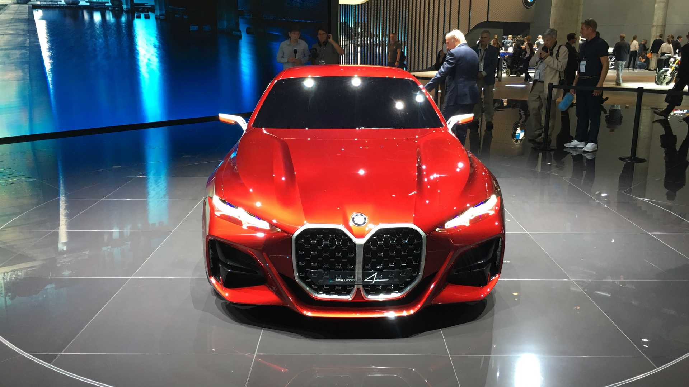
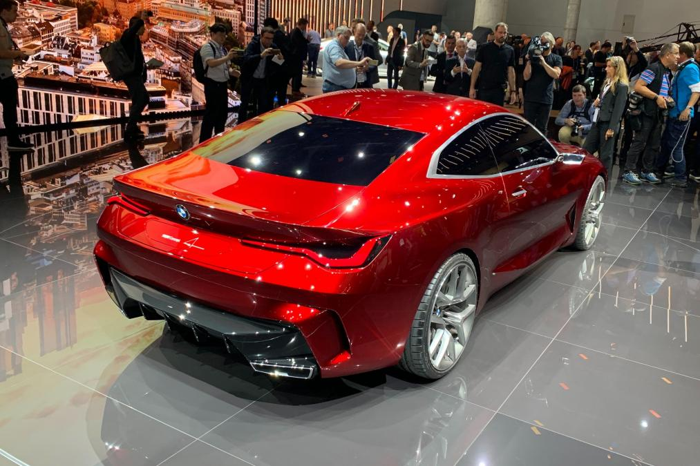

PENGANTAR BMW 4 SERIES 2019
Review BMW Concept 4 2019 - BMW memulai proses pemisahan varian dua dan empat pintu dari Seri 3 dan memasukannya dalam model baru bernama Seri 4 pada 2013. BMW pun menambahkan beberapa peningkatan dan pemisahan dengan mengenalkan mobil konsep yang hanya disebut ‘4’ pada Frankfurt Motor Show 2019. Tampilan anyar dan berbeda dengan Seri 3 menegaskan bentuk baru dari BMW Concept 4 2019.
Tampilan baru bisa jadi memikat namun tentu selera menjadi hak setiap orang. Perbedaan yang jelas adalah desain gril yang menghindari kesan besar dan dibuat lebih vertikal. "BMW Concept 4 menghadirkan tampilan ikonik yang percaya diri dan berkelas," bos desain BMW Domagoj Dukec menjelaskan tentang konsep gril baru tersebut.
Gril yang besar langsung mengingatkan kita pada tampilan baru Seri 7 dan X7 yang diperkenalkan tahun ini. "Ini (menegaskan) bentuk dan desain," penjelasan BMW tentang gril barunya, "Referensi klasik legendaris seperti BMW 328 atau BMW 3.0 CSI dan karena itu menyoroti sejarah panjang dan sukses merek BMW sebagai pembuat coupé yang bagus."
EKSTERIOR BMW 4 SERIES 2019 BMW masih mempertahankan gaya mereka dengan tampilan Concept 4. Kisi-kisi gril kidney yang khas, intake udara yang besar serta desain yang terpahat memberikan kesan sangar namun seksi pada eksterior BMW Concept 4 2019.
Review BMW Concept 4 2019: Eksterior Depan
Satu hal yang langsung menarik perhatian ketika melihat tampilan depan adalah gril yang besar. Tampilan yang mungkin akan dipertanyakan – namun senada dengan desain terbaru BMW seperti Seri 7 dan X7 – akan memberikan tampilan yang lebih elegan. Eksterior depan BMW Concept 4 2019 menghadirkan kap yang lebih panjang dibandingkan sebelumnya. eksterior depan BMW Concept 4 2019 berwarna merah Tampilan depan BMW Concept 4 2019 Di sisi lain, lampu depan dengan laser menghadirkan keindahan tersendiri. Kluster ramping yang memberikan desain tiga dimensi. Tepat di bawah lampu depan, BMW telah memasukkan bukaan udara besar yang akan memberikan udara segar ke kompartemen mesin dan rem.
Review BMW Concept 4 2019: Eksterior Samping

Desain samping yang mulus dan menghindari garis-garis tajam membuat sisi eksterior samping BMW Concept 4 2019 terkesan seksi dan cantik untuk sebuah sedan. Kombinasi kap yang panjang, garis atap yang rendah, overhang minimalis, serta jarak sumbu roda yang diperpanjang membuat siluet terkesan bagus.
Review BMW Concept 4 2019: Eksterior Belakang
eksterior belakang BMW Concept 4 2019 berwarna merah Tampilan belakang BMW Concept 4 2019 Di belakang, bahu yang besar dengan lengkungan yang besar mempengaruhi garis karakter yang membentang ke bagasi pada eksterior belakang BMW Concept 4 2019. Menjadikan desain coupe yang indah bersama desain lampu yang tajam layaknya tampilan depan. BMW mengatakan Concept 4 menampilkan wajah masa depan dari Seri 4, dan kita hanya bisa menunggu apakah desain menawan ini akan diproduksi dan dipasarkan beberapa waktu lagi.